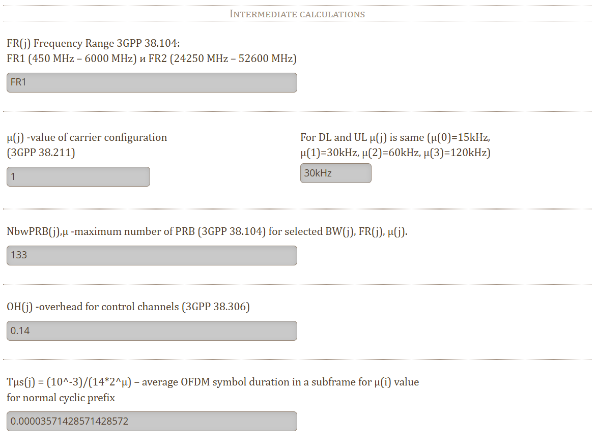

Руководство по эксплуатации
О документе
Руководство описывает онлайн-калькулятор пропускной способности 5G NR Throughput calculator (далее — калькулятор) и порядок работы с ним.
Калькулятор реализует расчет максимальной теоретической скорости передачи данных (throughput) в сетях 5G New Radio на основе спецификации 3GPP TS 38.306. Пользователь с помощью калькулятора может вычислить пиковую пропускную способность для заданной конфигурации 5G NR как в downlink (от базовой станции к устройству), так и в uplink (от устройства к сети) — как для всего радиоканала, так и для отдельного пользовательского оборудования при выделенной части ресурсов сети.
Для кого предназначено руководство
Руководство ориентировано на пользователей, которым нужно быстро понять:
-
Какие параметры влияют на скорость 5G NR;
-
Что означает каждый переключатель/поле в калькуляторе;
-
Как получить результат и интерпретировать его.
Типовые роли пользователей:
-
Инженер радиопланирования/оптимизации;
-
Инженер RAN/ядра связи, проверяющий конфигурации;
-
Технический писатель/аналитик, которому нужно объяснить расчет «на пальцах»;
-
Студент/исследователь, изучающий физический уровень 5G NR.
Используя данный калькулятор, инженер может быстро прикинуть максимальную пропускную способность 5G NR-системы для различных комбинаций параметров. Это помогает в планировании сетей 5G, выборе оборудования и проверке соответствия заявленных характеристик реальным теоретическим пределам. Пользуйтесь калькулятором для оценки возможностей вашей сети 5G – правильный выбор параметров и понимание результатов позволит наиболее эффективно эксплуатировать современную инфраструктуру связи.
Термины и сокращения
-
NR — New Radio, радиоинтерфейс 5G.
-
UE — User Equipment, пользовательское устройство (телефон/модем/роутер).
-
gNB — базовая станция 5G.
-
DL / UL — Downlink (к устройству) / Uplink (от устройства).
-
FDD / TDD — частотное / временное дуплексирование.
-
CA — Carrier Aggregation, агрегация несущих (суммирование полос).
-
CC — Component Carrier, компонентная несущая (одна «полоса» в CA).
-
MIMO layers — число пространственных слоев (потоков данных).
-
MCS — Modulation and Coding Scheme (модуляция + кодовый коэффициент).
-
Qm — порядок модуляции (бит/символ).
-
Rmax — кодовый коэффициент (доля полезной информации).
-
SCS — SubCarrier Spacing, шаг поднесущих (15/30/60/120 кГц…).
-
μ (нумерология) — индекс, определяющий SCS: \$SCS = 15cdot 2^mu\$ кГц.
-
PRB — Physical Resource Block, ресурсный блок (12 поднесущих).
-
OH — overhead, доля ресурсов под служебные/управляющие каналы.
Обзор и назначение калькулятора
Описание
Калькулятор — веб-страница, на которой вы задаете параметры 5G NR (режим DL/UL, FDD/TDD, число несущих, модуляцию, MIMO, полосу и др.), а инструмент рассчитывает максимальную пропускную способность (throughput) в Мбит/с.
|
Note
|
Калькулятор оценивает пиковую теоретическую скорость при идеальных условиях (без радиопомех, перегрузки соты, ограничений планировщика, ухудшения качества канала и т.д.). В реальной сети фактическая скорость обычно ниже. |
Калькулятор доступен по адресу https://5g-tools.com/5g-nr-throughput-calculator/.
Предполагаемая реализация
Калькулятор реализован в виде веб-приложения на HTML/JavaScript:
-
Поля формы меняют друг друга динамически (например, при выборе TDD появляется отдельный блок настроек);
-
Часть значений вычисляется автоматически (серые поля);
-
Расчет происходит мгновенно, без явных «загрузок» — вычисления идут на стороне браузера.
Как устроен расчет
Основная формула
Калькулятор использует стандартный подход: скорость передачи данных получается как «сколько бит мы можем передать за один OFDM-символ» умножить на «сколько символов в секунду», затем скорректировать на накладные расходы (overhead) и сложить по всем агрегированным несущим.
Ниже приведен базовый вид формулы, используемый в калькуляторах throughput 5G NR:
где:
-
\$J\$ — число агрегированных несущих (CC) в Carrier Aggregation.
-
\$v_{text{layers}}\$ — число MIMO-слоев (потоков данных).
-
\$Q_m\$ — порядок модуляции (бит на 1 символ): QPSK=2, 16QAM=4, 64QAM=6, 256QAM=8.
-
\$f\$ — масштабирующий коэффициент (scaling factor) из 3GPP (обычно 1, если считаем «пик»).
-
\$R_{max}\$ — кодовый коэффициент (доля полезных бит). В интерфейсе часто задается как «Target code rate R×[1024]», тогда \$R_{max}=frac{R}{1024}\$.
-
\$N_{text{PRB}}\$ — число ресурсных блоков PRB для выбранной полосы BW и нумерологии μ.
-
\$12\$ — в одном PRB всегда 12 поднесущих.
-
\$T_s^mu\$ — средняя длительность OFDM-символа (зависит от μ).
-
\$OH\$ — доля ресурсов, уходящая на служебные/управляющие каналы (overhead).
-
\$10^{-6}\$ — перевод в Мбит/с (из бит/с).
Особенность TDD (доля DL/UL во времени)
В режиме TDD (Time Division Duplex, временное разделение) не все символы/слоты кадра отданы под передачу данных в одном направлении. Поэтому калькулятор вводит дополнительный коэффициент «доля слотов/символов, выделенных под DL (или UL)».
Обозначим эту долю как \$alpha_{text{dir}}\$ (для DL или UL). Тогда итоговый throughput для TDD считается как:
Для режима FDD (Frequency Division Duplex, частотное разделение) можно считать \$alpha_{text{dir}}=1\$, так как направления разделены по частоте.
Интерфейс калькулятора
На странице результат отображается вверху/снизу, например:

Ниже расположены блоки параметров:
-
Input data (входные параметры, которые вы задаете)

-
Only for TDD (блок используется в случае, если выбран режим TDD.

-
Intermediate calculations (серые поля, которые калькулятор считает сам)

NoteСерые поля изменять нельзя — они вычисляются автоматически из выбранных режимов и стандартных таблиц.
Параметры калькулятора
Таблица основных (изменяемых) параметров представлена ниже:
Таблица основных параметров калькулятора
Наименование параметра |
Описание параметра |
||
|---|---|---|---|
Direction of data transfer (направление передачи) |
Выбор влияет на:
|
||
Mode (дуплексирование): FDD / TDD |
Зависимости |
||
J — number of aggregated component carriers (число агрегированных несущих) |
Параметр \$J\$ задает количество несущих в агрегации (CA).
|
||
v(j)Layers — maximum number of MIMO layers (число MIMO слоев) |
Параметр \$v_{text{layers}}\$ — сколько независимых потоков данных передается одновременно. Практический смысл:
|
||
Use MU-MIMO Beamforming / Massive MIMO capacity Gain |
Переключатель относится к режимам, где базовая станция может обслуживать несколько пользователей одновременно (MU-MIMO) и/или использовать beamforming.
|
||
Mode of Modulation and Code Rate (MCS / модуляция и кодовый коэффициент) |
Эта группа определяет \$Q_m\$ (порядок модуляции) и \$R_{max}\$ (кодовый коэффициент). Доступны режимы:
Поля/элементы управления:
|
||
f(j) Scaling factor (масштабирующий коэффициент) |
Параметр \$f\$ — коэффициент, учитывающий ограничения/снижения эффективности из 3GPP.
|
||
BW(j) — Bandwidth, Frequency Range и μ (полоса, диапазон, нумерология) |
Здесь вы выбираете:
Калькулятор затем автоматически определяет:
|
||
Overhead OH(j) (служебные расходы) |
Опция определяет \$OH\$ — долю ресурсов, которая не идет на пользовательские данные. Доступно:
|
||
Параметры только для TDD (ONLY FOR TDD) — блок используется в случае, если выбран режим TDD. |
|||
Mode of Symbols allocation (распределение символов) |
Определяет, как калькулятор вычисляет долю \$alpha_{text{dir}}\$ — какая часть времени кадра выделена под DL (или UL). Возможные режимы (зависит от реализации калькулятора):
|
||
Frame structure, DL:UL (структура кадра) |
Вы выбираете соотношение DL/UL на уровне «кадровой структуры» (например, сколько слотов DL и сколько UL в периоде). Это влияет на итоговую долю \$alpha_{text{DL}}\$ и \$alpha_{text{UL}}\$. |
||
TDD Slot formats configuration (формат слота) |
Выбор конкретного шаблона слота (последовательность D/U/S или D/U/«special») задает детальное распределение символов внутри слота. |
||
Use Flexible Symbol for Data (гибкие символы) |
Определяет, используются ли «flexible symbols» (гибкие символы) как полезные данные или как защитные/служебные (gap). |
||
Автоматически вычисляемые параметры
Эти значения калькулятор рассчитывает сам. Их нельзя редактировать — достаточно понимать смысл, чтобы проверять, что введенные/полученные вами данные корректны.
Таблица автоматически вычисляемых параметров
| Параметр (в интерфейсе) | Обозначение | Что означает |
|---|---|---|
FR(j) Frequency Range |
\$FR\$ |
Диапазон частот: FR1 (до ~6 ГГц) или FR2 (мм-волны, выше ~24 ГГц). Определяется выбранной полосой/шагом. |
μ(j) — value of carrier configuration |
\$mu\$ |
Нумерология (индекс). Определяет шаг поднесущих: \$SCS=15cdot 2^mu\$ кГц. |
NbwPRB(j),μ — maximum number of PRB |
\$N_{text{PRB}}\$ |
Максимальное число PRB для выбранных BW/FR/μ по стандартным таблицам. |
OH(j) — overhead |
\$OH\$ |
Накладные расходы (доля ресурсов под управление/служебные сигналы). |
Tμs(j) — average OFDM symbol duration |
\$T_s^mu\$ |
Средняя длительность OFDM-символа для выбранного μ (normal CP). |
Part of the Slots allocated for DL in TDD mode |
\$alpha_{text{DL}}\$ |
Доля ресурсов TDD, отведенная под DL (аналогично для UL). Используется как множитель к базовой формуле. |
Пошаговый пример
Попробуйте повторить расчет, который дает результат 658.726 Mbps:
-
Выберите направление и режим
-
В Direction of data transfer выберите DL (downlink).
-
В Mode выберите TDD.
-
-
Агрегация и MIMO
-
Установите \$J=1\$ (одна несущая).
-
В v(j)Layers задайте 4 (\$v_{text{layers}}=4\$).
-
Use MU-MIMO … — выберите No.
-
-
Модуляция и кодовый коэффициент (Auto)
-
В Mode of Modulation and Code Rate выберите Auto (3GPP 38.214).
-
Установите MCS index = 28.
-
Выберите таблицу (как на скриншоте) — например 38.214-Table 5.1.3.1-1.
-
Убедитесь, что калькулятор выставил:
-
\$Q_m=6\$ (что соответствует 64QAM),
-
Target code rate R = 948,
-
\$R_{max}=0.92578125\$ (то есть \$frac{948}{1024}\$).
-
-
-
Scaling factor
-
В f(j) Scaling factor выберите 1 (\$f=1\$).
-
-
Полоса, FR и μ
-
В BW(j) — bandwidth выберите вариант:
-
BW:50MHz FR1 μ:30kHz
Это соответствует:
-
\$FR=FR1\$,
-
\$mu=1\$ (30 кГц),
-
\$N_{text{PRB}}=133\$ (серое поле).
-
-
-
Overhead
-
В Overhead OH(j)… оставьте Auto (3GPP 38.306).
-
Проверьте, что рассчиталось \$OH=0.14\$.
-
-
Настройки TDD (распределение DL/UL)
-
В секции ONLY FOR TDD выберите вариант распределения, чтобы получилось:
-
Part of the Slots allocated for DL… \$alpha_{text{DL}}=0.7714285714285714\$
-
-
-
Проверьте intermediate calculations. Ожидаемые результаты:
-
\$FR=FR1\$
-
\$mu=1\$ (30 kHz)
-
\$N_{text{PRB}}=133\$
-
\$OH=0.14\$
-
\$T_s^mu = 0.00003571428571428572\$ (сек)
-
-
Итоговый результат
Вверху страницы должно отобразиться: Calculated 5G NR Throughput, Mbps: 658.726
Если хотите проверить «вручную», то можно подставить значения:
|
Note
|
При необходимости нажмите «Export to CSV» для сохранения результатов. Файл CSV будет содержать введенные параметры и рассчитанную пропускную способность, что удобно для отчетов или сравнения разных сценариев. Вы можете повторить расчет с другими значениями (например, изменить \$J\$ или тип модуляции) и сравнить выходные данные – калькулятор быстро пересчитает throughput для каждого нового набора параметров. |
Практические советы
-
Начинайте с простого: \$J=1\$, FDD, f=1, Auto-MCS — так легче понять влияние каждого параметра.
-
Для «пиковых» оценок выбирайте максимальную модуляцию и высокий MCS (если это соответствует вашему сценарию).
-
В TDD внимательно следите за \$alpha_{text{DL}}\$ — это один из самых «сильных» множителей.
-
Если результат «не сходится с ожиданиями», сначала проверьте:
-
DL/UL,
-
FDD/TDD,
-
FR1/FR2,
-
μ (шаг поднесущих),
-
PRB (сколько ресурсов реально выбрано),
-
overhead.
-
Ограничения расчета
Калькулятор дает верхнюю теоретическую оценку. В реальности скорость может быть ниже из-за:
-
Качества радиоканала (SINR), выбора MCS сетью «на лету»;
-
Ограничений планировщика и конкуренции пользователей;
-
Протокольных накладных расходов выше физического уровня (MAC/RLC/PDCP/IP);
-
Особенностей реализации устройств (UE) и базовой станции.